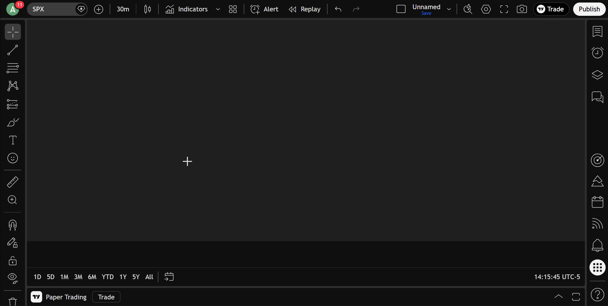

1
Copy Your Favourite Indicator or Strategy
Find the Pine Script indicator or strategy you want to use on TradingView. Copy the full source code
into a
.txt file. PineChart's interpreter supports Pine Script v5/v6 syntax — if/else, for/while
loops, var/varip,
user-defined functions and types, and 511+ implemented Pine API functions/features. You can run any Pine Script indicator in
MT5
that uses supported API calls.
